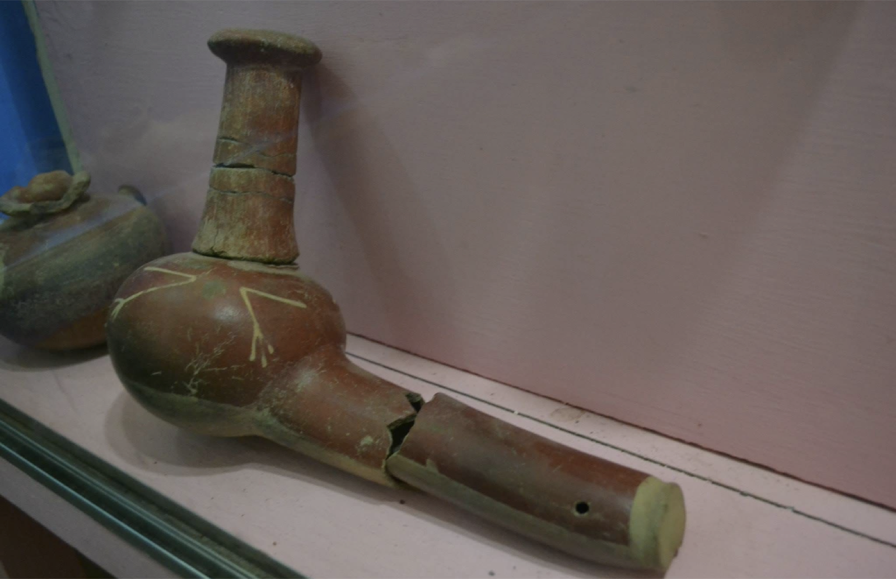
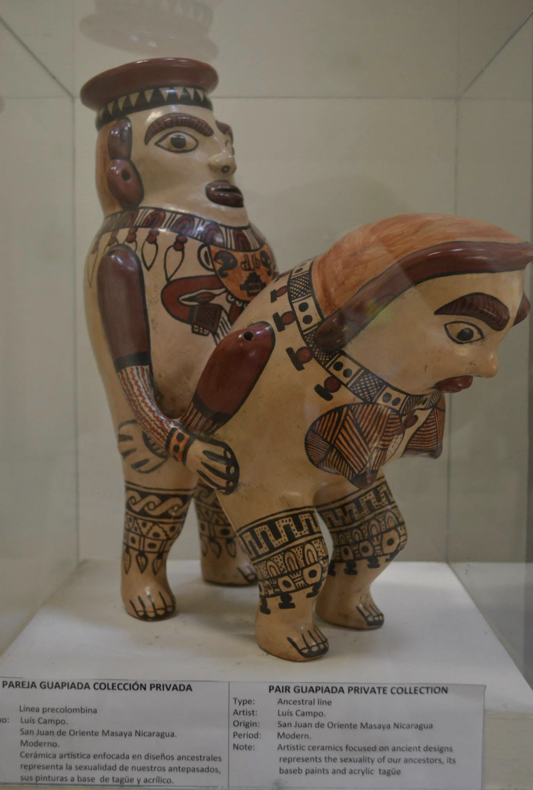

Llegué a la Isla de Ometepe la tarde del sábado. Como el domingo no hay buses, contraté un guía por unos US$40 — caro a primera vista, pero mucho más eficiente que cruzar la isla solo en mototaxi.


Ojo de Agua
Primera parada: Ojo de Agua. Un río en el centro de la isla, acondicionado para visitantes. El agua es transparente y se siente bien — me arrepentí de no haber llevado el traje de baño.

Charco Verde y el museo
En la zona de Charco Verde hay un mariposario (US$5), un mirador desde donde se ven monos (US$3) y un pequeño museo de la isla. El museo exhibe piezas indígenas halladas en la isla; la entrada cuesta apenas US$1.




Sitio indígena
En el pueblo de Santa Cruz hay un sitio indígena en los terrenos de un hotel. La entrada cuesta US$1. Sin guía pasarías de largo sin darte cuenta — pero con guía no paran las sorpresas: "ah, ¿esto estaba aquí?".


Comida y una iglesia
Almuerzo en un comedor local en Moyogalpa. Unos US$2 por un plato fuerte. Esto es lo bueno de los precios centroamericanos.


Los apagones en la isla son lo malo, pero el lugar es limpio y tranquilo. Con tan pocos buses, contratar un guía vale cada centavo. Ometepe terminó siendo uno de mis lugares favoritos de Nicaragua.